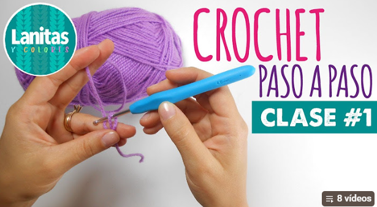
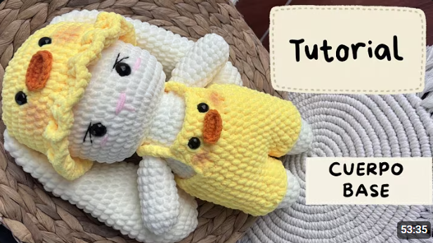
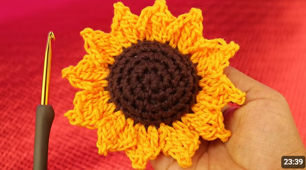
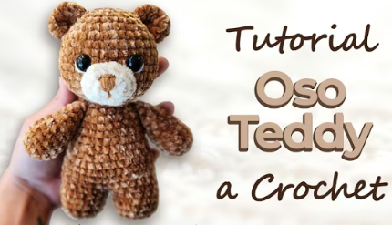

MAGIGURUMI
MAGIGURUMI

Punto bajo para principiantes
Aprende uno de los puntos básicos del crochet con instrucciones sencillas.
Ver tutorialAprende desde lo más básico hasta proyectos avanzados.

Aprende uno de los puntos básicos del crochet con instrucciones sencillas.
Ver tutorial
Crea un adorable conejito desde el anillo mágico hasta los detalles finales.
Ver tutorial
Un proyecto colorido para decorar tu espacio o regalar.
Ver tutorial
Aprende a tejer y unir las piezas de un osito adorable.
Ver tutorial